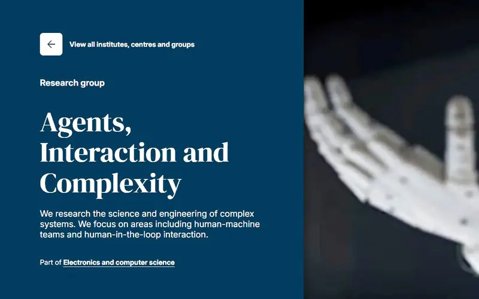
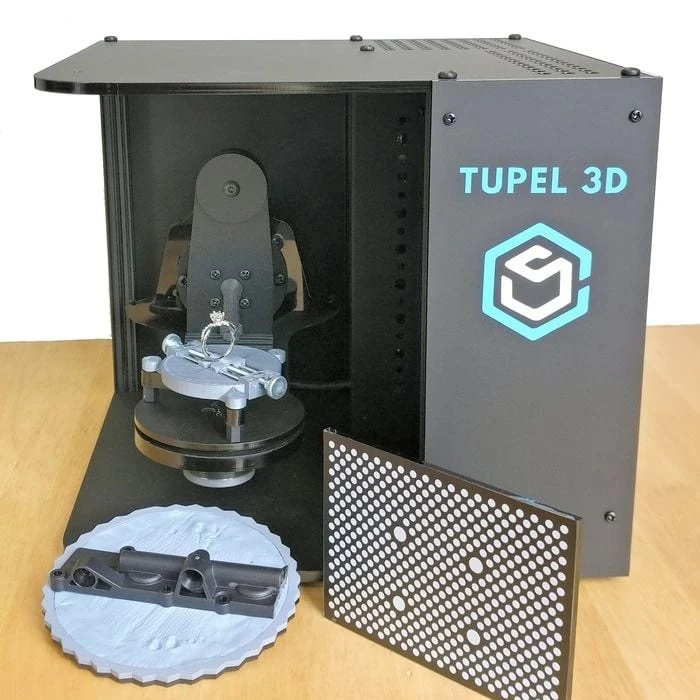
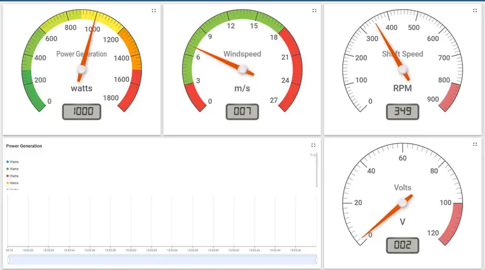
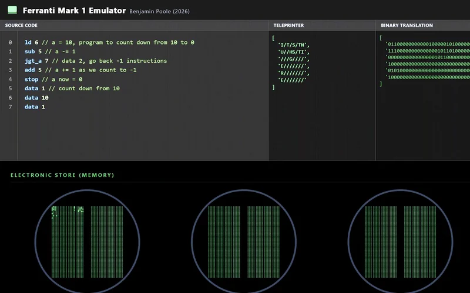
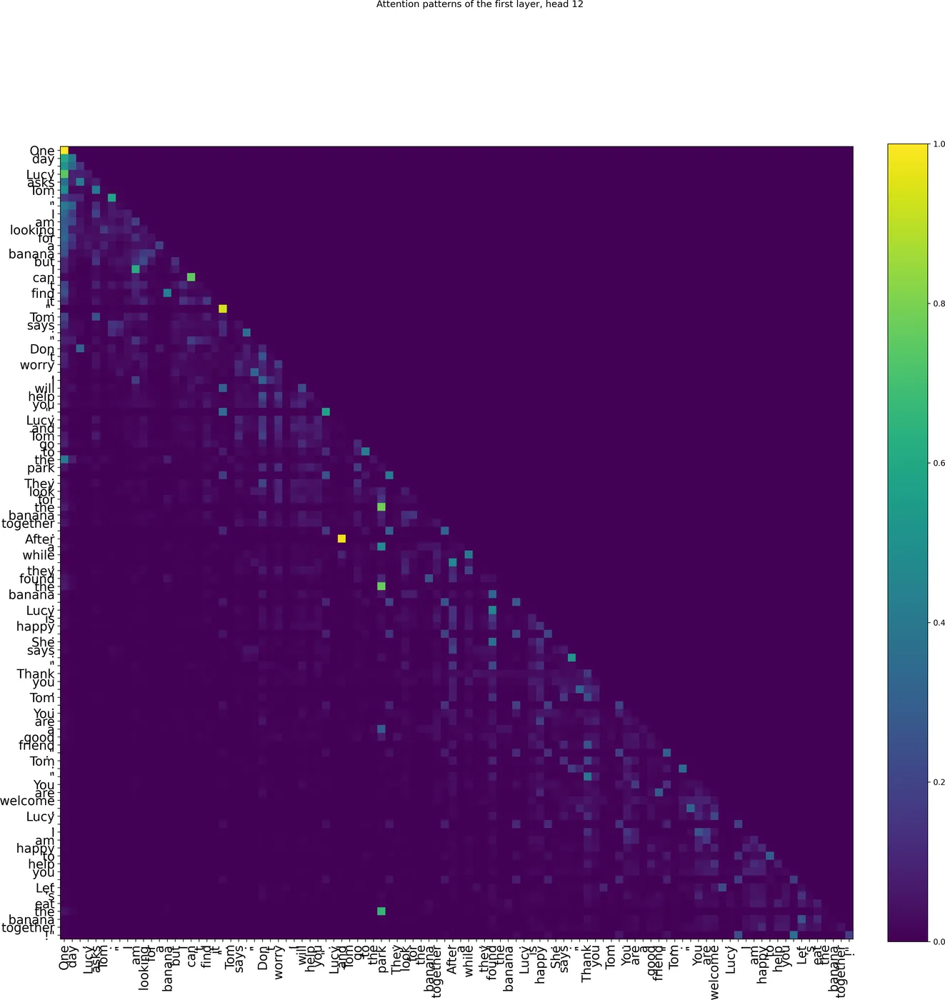
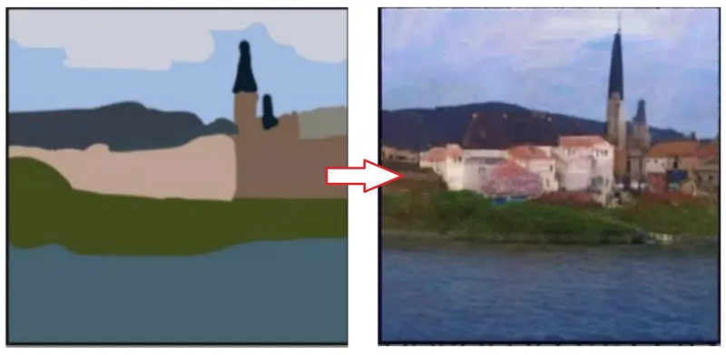
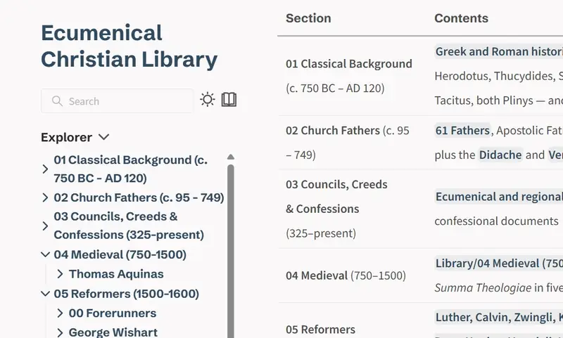
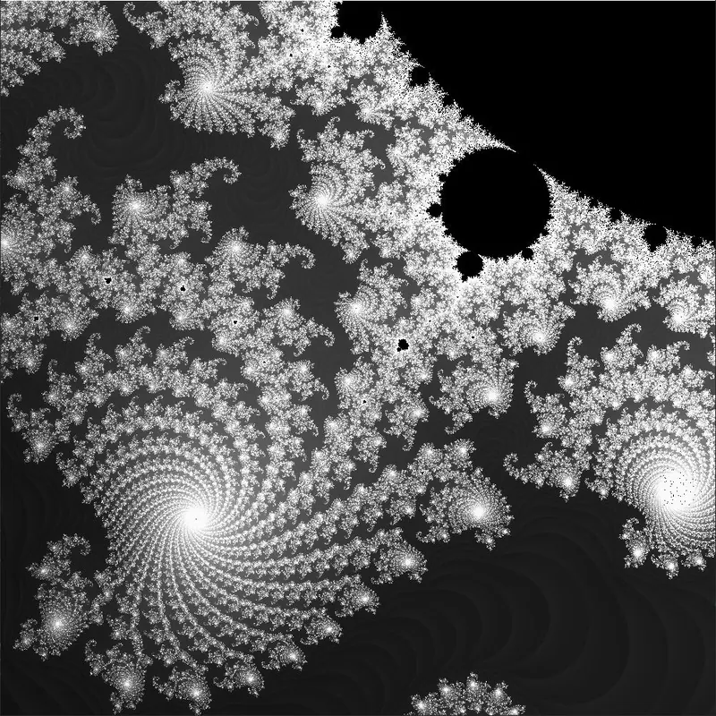
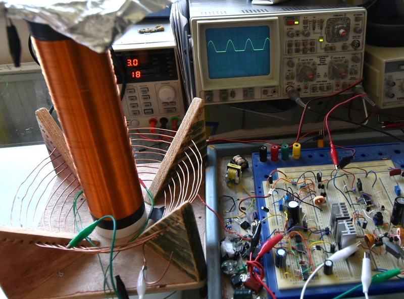

Benjamin Poole
Hey! I’m Benjamin Poole, a lifelong technology enthusiast and Google Scholarship recipient, specialising in Machine Learning and Informatics research.
- Studying
- MSc Artificial Intelligence, Edinburgh
- Graduated
- BEng Computer Science, Southampton — First Class
- Researched at
- Tupel 3D Agents, Interaction & Complexity
- Engineered at
- Britwind — Ecotricity
- Awarded
- Google Europe Scholarship 2024
- Interested in
- LLM interpretability Reinforcement learning Computer vision Compilers
I graduated in Computer Science with First Class Honours and was awarded the Google Europe Scholarship (2024). Offered a funded PhD position at Southampton but am currently undertaking a Masters in Artificial Intelligence at the University of Edinburgh to further develop my theoretical foundations.
Research experience
-

Vision-language policy for robot agents
Researcher, Agents, Interaction and Complexity · University of Southampton
Research on controlling robot agents from natural language, supervised by a postgraduate researcher. I developed a novel approach building on MineCLIP (arXiv:2206.08853): a teacher model that trains a student policy through imitation learning.
The group later offered me a funded PhD.
-

Low-cost structured-light 3D scanner
Researcher, Tupel 3D
Researched and prototyped a hand-held structured-light 3D scanner. I self-taught computer vision and SLAM from open lectures, then built a proprietary depth-reconstruction AI that produced accurate 3D imagery from primitive hardware, alongside an ORB-SLAM 3 style camera tracker (arXiv:2007.11898).
-

Turbine analytics dashboard
Software Engineer, Britwind · Ecotricity
A real-time IoT dashboard displaying customer wind turbine generation with full analytics and customisation. Built in six weeks, replacing a stalled contractor-dependent effort and saving significant development cost.
Featured projects

Ferranti Mark I Emulator
The 1951 machine emulated in the browser, with visualised Williams-tube store.

An LLM from scratch
An implementation and analysis of a 14.5M-parameter language model written from the matrix multiplications up.

Sketch to photograph with SDEdit
Stable Diffusion turned into a sketch renderer, with no retraining at all.
More projects
Browser-native speech transcriber
Parakeet TDT 0.6B, running entirely in the browser.

Ecumenical Christian Library
A searchable digital library of over 17,000 texts.
Compiler for a C-like language
Lexer, parser and code generator, front to back.

Fast Mandelbrot renderer
A GPU-accelerated set explorer built for speed.

Solid-state Tesla coil
A homebrew SSTC running off 30V, reaching 60kV.
Let's connect
Graduating and seeking full-time roles from September 2027
Or